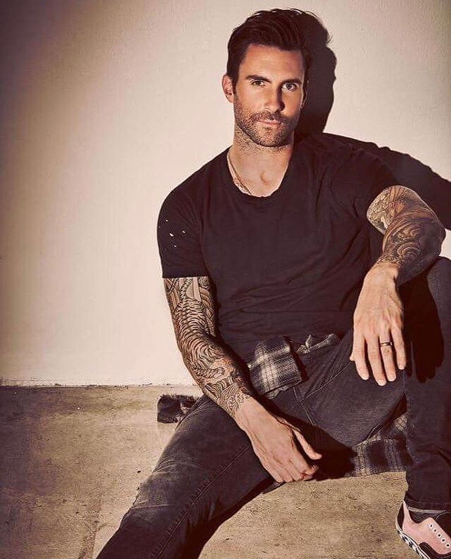
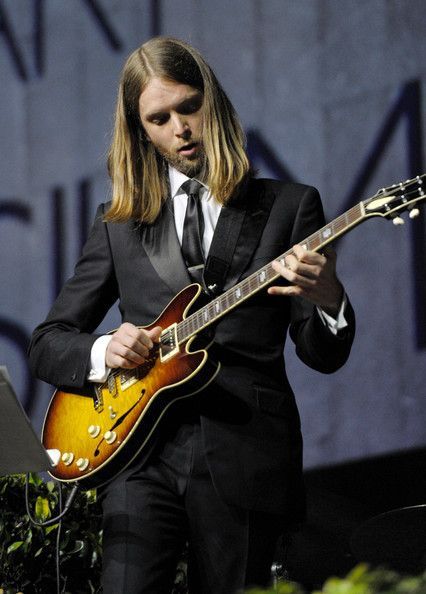
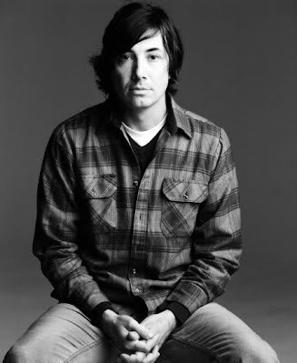
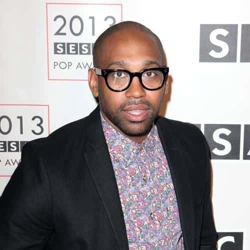
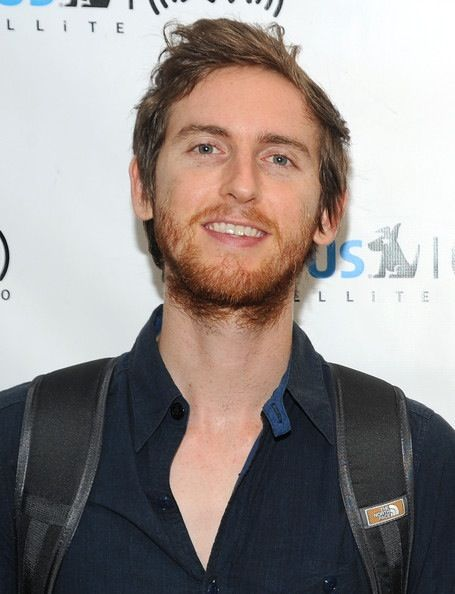

Cantante,compositor, actor estadounidense, conocido por ser el líder de la banda Maroon 5.
Nacido y criado en Los Ángeles (California), vivió con sus padres Frederick Levine y Patsy Noah.
Levine asistió al campamento de verano French Woods Festival of the Performing Arts Camp.
En su primer día en la escuela Brentwood, Levine se reunió con el tercer miembro de Maroon 5, Mickey Madden. Mickey Madden actualmente está retirado.
>
James Valentine
Nacimiento: 5 de octubre de 1978
Nacionalidad: Estadounidense
Rol: Guitarrista
Estatura: 1.89 metros
Valentine tocaba en las bandas Kid Quarkstar, Mondello y Happy Dog en Nebraska. En 2000, Happy Dog cambió su nombre por el de Square y se trasladó a Los Ángeles, California.
Eventualmente, los integrantes de Square y de Kara's Flowers se convirtieron en amigos, y cuando Kara's Flowers estaba en busca de otro guitarrista, Valentine se les unió.
Tensiones personales en Square ayudaron en su decisión, y poco después, Kara's Flowers se convirtió en Maroon 5.
>
Matt Flynn o Matthew Flynn es actualmente el baterista de la banda estadounidense Maroon 5.
Flynn sustituyó al también baterista Ryan Dusick, quien dejó la banda debido a lesiones en el hombro y muñeca.
Matt también ha estado de baterista en las bandas de The B-52'sy Gavin DeGraw. Estudió en Gunn High School.
>
PJ Morton es un músico y productor musical estadounidense, ganador de un Grammy; actualmente también es el teclista de la banda de pop-rock Maroon 5.
El salto para Morton se dio en 2010, cuando el director musical de Maroon 5 y amigo de P.J. Adam Blackstone le pidió audicionar para el rol de vocalista/tecladista en la banda.
P.J. fue el primero en ser evaluado y dejó una marca indeleble en el grupo.

Se mudó con su familia a Los Ángeles cuando estaba en edad escolar, comenzando a tocar la guitarra en la secundaria. Junto con sus amigos Adam Levine, Ryan Dusick y Mickey Madden formaron el grupo Kara's Flowers en 1994.
Levine y Carmichael sólo duraron un semestre en la universidad antes de la deserción y de su regreso a California, luego de lo cual los dos habían adquirido experiencia en composición y Jesse cambió su instrumento musical por el teclado.